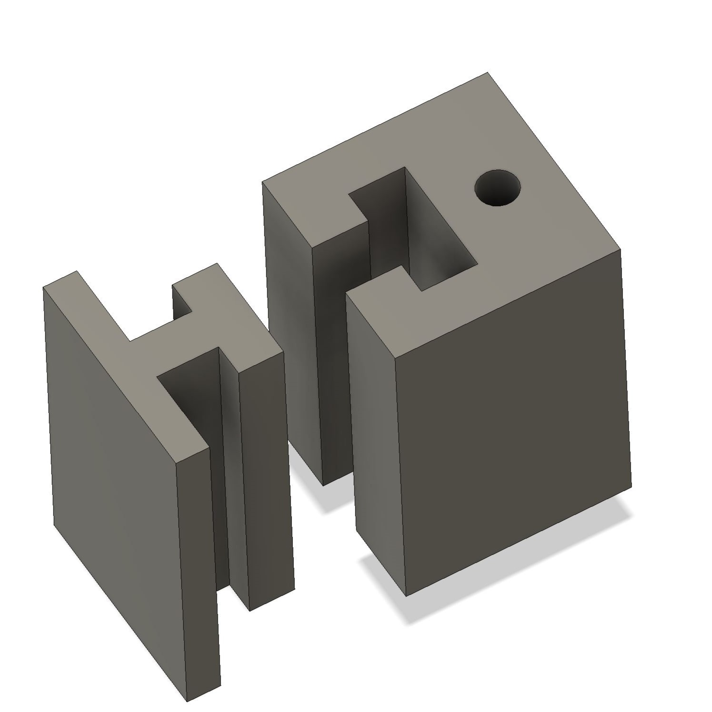
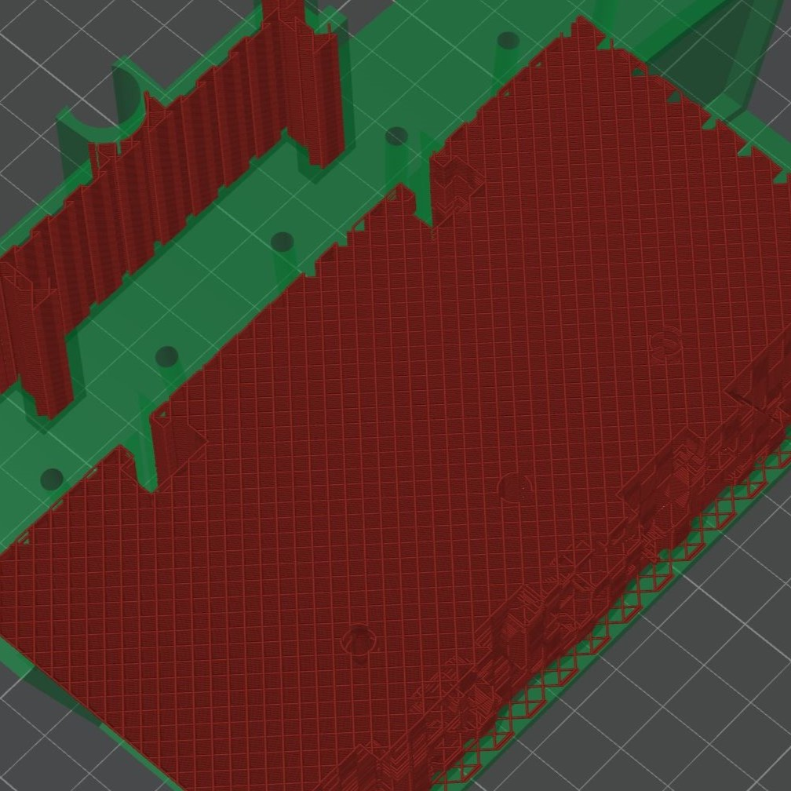
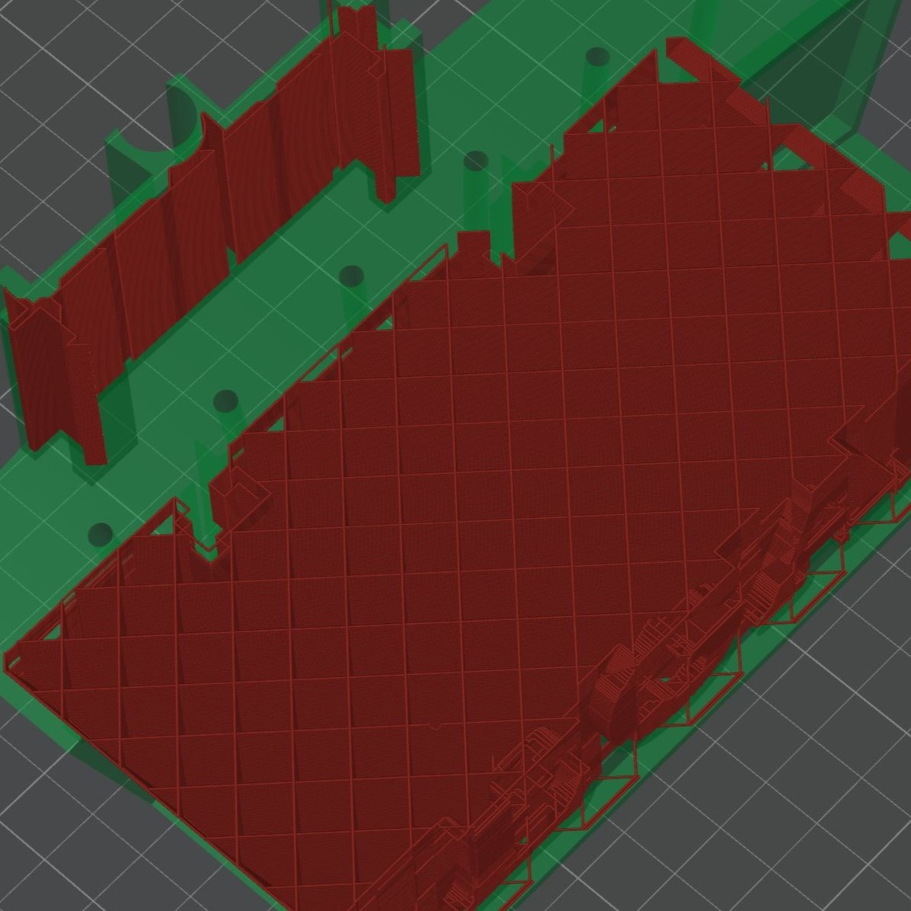
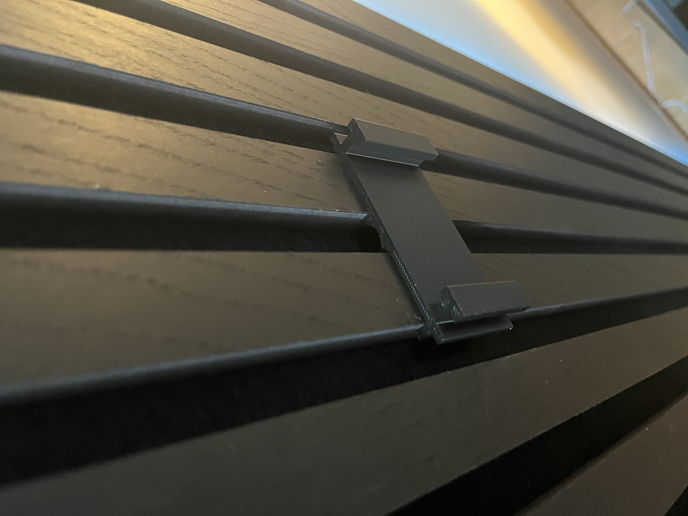
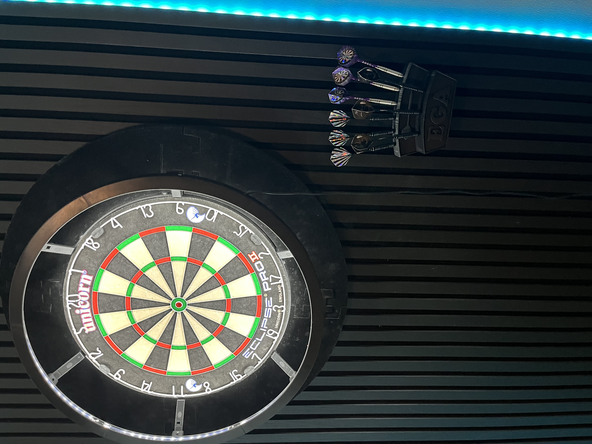
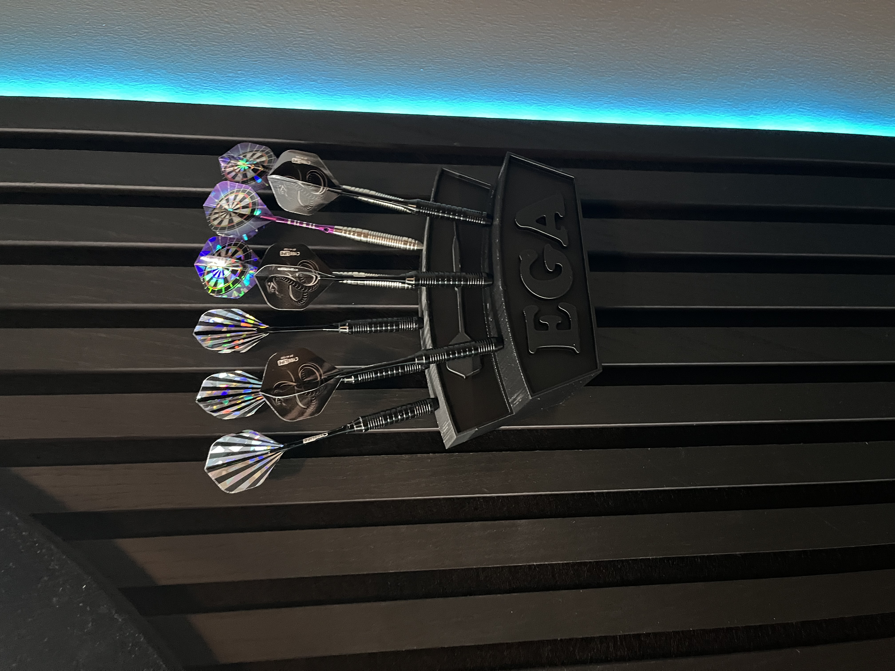

Undirbúningur
Þegar ég byrjaði á þessu verkefni, þá datt mér ekki strax í hug hvað ég ætti að hanna. Ég velti fyrir mér mismunandi möguleikum en hafði ekki sterka hugmynd í upphafi. Hins vegar hef ég verið að setja upp píluaðstöðu heima hjá mér og fannst því sniðugt að hanna pílustand fyrir pílurnar mínar. Ég skoðaði mikið af hugmyndum á netinu og fann þessa hönnun á Cults3D sem mér þótti áhugaverð: Darts Holder. Í fyrstu ætlaði ég að gera einfaldan stand sem myndi standa á borði, en síðan datt mér í hug að bæta við festingu til að hengja hann á þiljur sem ég hafði sett fyrir aftan píluspjaldið. (Mynd af pílu aðstöðunni sem ég var að setja upp má sjá hér að neðan)
Hönnun
Þar sem þetta var 3D prentunarverkefni, þurfti ég að hanna hlut sem ekki væri auðvelt að búa til með frádráttarframleiðslu. Ég ákvað að hafa lífrænt form í standinum sem hefðu verið erfitt að tálga eða fræsa. Einnig tryggði ég að allar festingar væru nógu sterkar til að þola álagið frá pílunum.
Fyrst mældi ég hversu stór standurinn þurfti að vera svo pílurnar væru snyrtilega staðsettar, ég kom að þeirri niðurstöðu á að hafa botninn 120mm og hæðina frá botni og upp 80mm það var minnsta stærðin sem var hægt að hafa án þess að pílurnar væru of þéttar og að það væri hægt að nota standinn. Svo til þess að festa hann á þiljurnar þurfti ég að hanna tengingu sem myndi halda standinum stöðugum en jafnframt vera auðvelt að fjarlægja ef þyrfti að flytja hann. Því gerði ég festingu sem hafði ekki of mörg hvöss horn og myndi svegjast inn á milli þiljana. (Sjá á myndum hér að neðan)
Svo þegar ég var viss um allar stærðirnar sem ég þurfti byrjaði ég að teikna og gekk það mjög vel fyrir sig. Hérna að neðan er mynda slideshow sem sýnir teiknunar ferlið.
Módel sýnishorn
Prófanir og prentun
Þegar ég var tilbúinn að prenta, mætti ég í skólann tvö kvöld í vikunni til að nýta 3D prentarana þar. Hins vegar voru prentararnir mjög uppteknir og í bæði skiptin var löng biðröð, sem gerði mér erfitt fyrir að klára verkefnið á réttum tíma.
Til að leysa þetta vandamál fékk ég að prenta hjá vini mínum sem á Bambu P1S prentara. Til að nota þann prentara þurfti ég að setja upp Bambu Studio, sem er sambærilegur við Prusa Slicer en sérhannaður fyrir Bambu prentara. Ég stillti allar viðeigandi breytur í slicer-num og prentunin gekk vel á Bambu P1S.
Áður en ég fór í að prenta fullbúna hönnunina, þurfti ég að tryggja að hún myndi virka eins og ætlast var til. Ég ákvað að gera prófunarkubb til að athuga hvort:
- Pílurnar myndu passa í standinn.
- Festingarnar sem ég hannaði myndu virka og smella rétt saman.
Með þessu prófi gat ég fínpússað hönnunina og lagað stærðir áður en ég prentaði lokahönnunina. En við fyrstu prufu þá smell passaði þetta saman svo ekki var þörf á miklum breytingum. Þetta sparaði bæði tíma og efni.
Svo setti ég standa módelið inn í Bambustudio og var það mjög auðvelt í notkun. Ég skoðaði hvernig prentarinn ætlaði að prenta þetta og taldi forritið að það þyrfti engan stuðning eða neitt svoleiðis, en forritið notaði standard 15% infill sem mér fannst full mikið og það lengdi einnig prentunar tímann mikið, svo ég ákvað að lækka það niður í 10% og lækkaði það prent tímann um 20% sem ég var sáttur við og þá var þetta tilbúið í prentun.






3D skönnun
Nú fannst mér við hæfi að 3d skann eina pílu og gerði ég það. Í það notaði ég app í símanum Qlone , ég prentaði út lítinn "qr kóða" sem myndi hjálpa til við skönnunina en jafnvel þótt ég var með qr-botninn þá náði hann ekki að skanna píluna því hún er náturulega mjög mjó og svort. Þá fór ég og fann hann Grísmund sem hefur verið í hillunni hjá mér í mörg ár og það endaði á að ná miklu betri nákvæmni en ég átti von á.
Ferlið gekk mjög vel í seinna skiptið, og ég var ánægður með útkomuna.
Niðurstöður og Lærdómur
Verkefnið gekk virkilega vel og var mjög skemmtilegt, festingin festist nákvæmlega eins og áætlað var og standurinn kom mjög vel út. Í gegnum þetta verkefni lærði ég:
- Mikilvægi þess að prófa hönnun með litlum prufukubbi áður en farið er í stóra prentun.
- Hvernig hægt er að hanna hlut sem ekki væri hægt að búa til með frádráttarframleiðslu.
- Að 3D skönnun getur verið gagnleg til að endurgera eða sérsníða hluti.
Verkefnið var bæði lærdómsríkt og skemmtilegt, og ég er ánægður með lokaútkomuna af pílustandinum mínum!